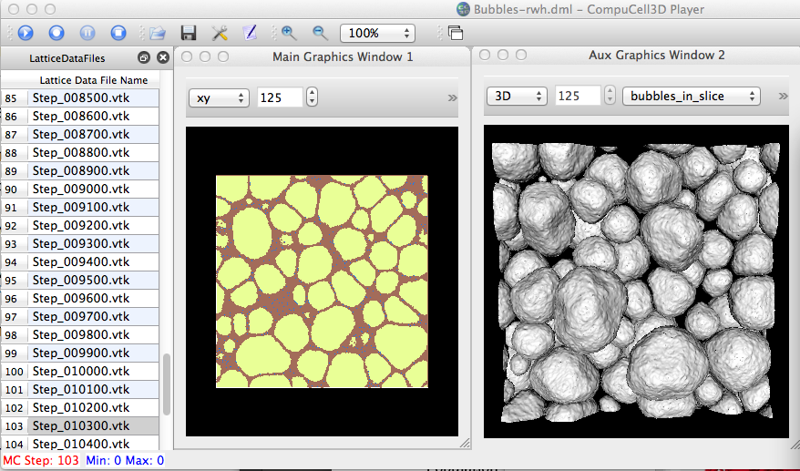

This is a brief description and discussion of how Lattice Description Files (LDF) are intended to work and how we can use them (and the associated .vtk files) to generate additional output (images and perhaps other data files).
On the CC3D Preferences panel, in the Output tab, there is a "Save lattice every Nth MCS" checkbox (with an associated spinbox widget to select "N"). This will allow writing out lattice data into .vtk files and they will appear under a "LatticeData" subdirectory under the associated output directory for the simulation. In addition to the .vtk files, there will also be a StepLDF.dml file that describes those files, e.g.:
~/CC3DWorkspace$ ty cellsort_3D_xml_12_07_2011_13_38_16/LatticeData/StepLDF.dml
<CompuCell3DLatticeData Version="1.0">
<Dimensions x="100" y="100" z="100"/>
<Lattice Type="Square"/>
<Output CoreFileName="Step" Directory="/Users/heiland/CC3DWorkspace/cellsort_3D_xml_12_07_2011_13_38_16/LatticeData" Frequency="1" NumberOfSteps="10000"/>
<CellType TypeId="0" TypeName="Medium"/>
<CellType TypeId="1" TypeName="Condensing"/>
<CellType TypeId="2" TypeName="NonCondensing"/>
<Fields>
<Field Name="Cell_Field" Type="CellField"/>
</Fields>
</CompuCell3DLatticeData>
The type of data that gets dumped in the .vtk files will depend on the fields that are used, but at a minimum, it usually contains at least 3 fields: CellType, CellId, and ClusterId; for example:
~/CC3DWorkspace/cellsort_3D_xml_12_07_2011_13_38_16/LatticeData$ head -12 Step_00107.vtk # vtk DataFile Version 3.0 vtk output ASCII DATASET STRUCTURED_POINTS DIMENSIONS 100 100 100 SPACING 1 1 1 ORIGIN 0 0 0 POINT_DATA 1000000 FIELD FieldData 3 CellType 1 1000000 char 0 0 0 0 0 0 0 0 0 0 0 0 0 0 0 0 0 0 ... ~/CC3DWorkspace/cellsort_3D_xml_12_07_2011_13_38_16/LatticeData$ grep cell Step_00107.vtk CellType 1 1000000 char CellId 1 1000000 long ~/CC3DWorkspace/cellsort_3D_xml_12_07_2011_13_38_16/LatticeData$ grep cluster Step_00107.vtk ClusterId 1 1000000 long
Contents[hide] |
Yes, but since the output directory is auto-named to match the simulation, in this case the sim "name" is "StepLDF", therefore the output directory and files are named as such (with a time-stamp suffix), e.g.:
~/CC3DWorkspace/StepLDF_dml_12_07_2011_16_22_36$ ll total 48 -rw-r--r-- 1 heiland staff 6382 Dec 7 16:22 StepLDF_dml_00001.png -rw-r--r-- 1 heiland staff 7002 Dec 7 16:22 StepLDF_dml_00002.png -rw-r--r-- 1 heiland staff 7334 Dec 7 16:22 StepLDF_dml_00003.png ...
For some unknown reason (at this moment), the image associated with the 0th MCS (.vtk) file does not get dumped.
You can resize the (Main) graphics window to have larger (smaller) images dumped.
player/Plugins/ViewManagerPlugins/SimpleTabView.py:
def __loadSim(self, file):
...
elif re.match(".*\.cc3d$", fileName):
self.__loadCC3DFile(fileName)
if self.__parent.latticeDataDock.isVisible():
self.__parent.latticeDataAct.trigger()
if self.__parent.modelEditorDock.isHidden():
self.__parent.modelAct.trigger()
elif re.match(".*\.dml$", fileName):
# Let's toggle these off (and not tell the user for now)
# Configuration.setSetting("ImageOutputOn",False) # need to make it possible to save images from .dml/vtk files
if Configuration.getSetting("LatticeOutputOn"):
QMessageBox.warning(self, "Message",
"Warning: Turning OFF 'Save lattice...' in Preferences",
QMessageBox.Ok)
print '-----------------------'
print ' WARNING: Turning OFF "Save lattice" in Preferences|Output'
print '-----------------------'
Configuration.setSetting("LatticeOutputOn",False)
# self.dlg.enableLatticeOutput(False) # disable the Lattice Output toggle (doesn't seem to work)
CompuCellSetup.playerType="CMLResultReplay"
self.prepareForNewSimulation()
CompuCellSetup.simulationPaths.setSimulationResultDescriptionFile(fileName)
if self.__parent.latticeDataDock.isHidden():
self.__parent.latticeDataAct.trigger()
if self.__parent.modelEditorDock.isVisible():
self.__parent.modelAct.trigger()
# rwh: if 3D view specified, do here
# graphicsFrameWidget threeDRB.trigger()
# self.lastActiveWindow._switchDim(True)
self.prepareLatticeDataView()
def prepareLatticeDataView(self):
self.__parent.latticeDataModel.setLatticeDataFileList(self.simulation.ldsFileList)
self.latticeDataModel = self.__parent.latticeDataModel
self.__parent.latticeDataModelTable.setModel(self.__parent.latticeDataModel) # this sets up the model and actually displays model data- so use this function when model is ready to be used
self.__parent.latticeDataModelTable.setParams()
self.latticeDataModelTable=self.__parent.latticeDataModelTable
def __openLDSFile(self,fileName=None):
filter = "Lattice Description Summary file (*.dml )" # self._getOpenFileFilter()
# defaultDir = str(Configuration.getSetting('OutputLocation'))
defaultDir = self.__outputDirectory
if not os.path.exists(defaultDir):
defaultDir = os.getcwd()
self.__fileName = QFileDialog.getOpenFileName(\
self.ui,
QApplication.translate('ViewManager', "Open Lattice Description Summary file"),
defaultDir,
filter
)
# converting Qstring to python string
self.__fileName=str(self.__fileName)
from os.path import basename
# setting text for main window (self.__parent) title bar
self.__parent.setWindowTitle(self.trUtf8(basename(self.__fileName)+" - CompuCell3D Player"))
# Shall we inform the user? Nah, screw 'em.
# msg = QMessageBox.warning(self, "Message","Toggling off image & lattice output in Preferences",
# QMessageBox.Ok ,
# QMessageBox.Ok)
Configuration.setSetting("ImageOutputOn",False)
Configuration.setSetting("LatticeOutputOn",False)
when run, the Draw methods get called (of course):
---- MVCDrawModel2D.py ----: initCellFieldActors called
Would it be possible to add a customized script to the .dml to allow rendering of additional field(s)? For example, here's a sample .dml file.
<CompuCell3DLatticeData Version="1.0">
<Dimensions x="250" y="250" z="250"/>
<Lattice Type="Square"/>
<Output CoreFileName="Step" Directory="/Users/heiland/Documents/Glazier/Gilberto/wet_foam_data" Frequency="1" NumberOfSteps="100000"/>
<CellType TypeId="0" TypeName="Medium"/>
<CellType TypeId="1" TypeName="Air"/>
<CellType TypeId="2" TypeName="Water"/>
<Fields>
<Field Name="Cell_Field" Type="CellField"/>
</Fields>
</CompuCell3DLatticeData>
Perhaps we could add another field, with an associated Python script, e.g.:
<Fields>
<Field Name="Cell_Field" Type="CellField"/>
<Field Name="My_Custom_Field" Type="CustomVis" PythonScript="pathto/myscript.py"/>
</Fields>
</CompuCell3DLatticeData>
rf. "CustomVis" defined as a field type:
~/dev/Glazier/cc3d-3.6.1-12-15-11/player$ grep customvis */*/*.py
Plugins/ViewManagerPlugins/SimpleTabView.py:FIELD_TYPES = ("CellField", "ConField", "ScalarField", "ScalarFieldCellLevel", "VectorField", "VectorFieldCellLevel","CustomVis")
Plugins/ViewManagerPlugins/SimpleTabView.py: visDict = CompuCellSetup.customVisStorage.visDataDict
Note that this .dml script gets parsed by player/Simulation/CMLResultReader.py:
def extractLatticeDescriptionInfo(self,_fileName):
import os
import os.path
import CompuCell
ldsFile=os.path.abspath(_fileName)
print MODULENAME,'ldsFile=',ldsFile
ldsDir=os.path.dirname(ldsFile)
self.ldsDir=ldsDir
import XMLUtils
from XMLUtils import CC3DXMLListPy
xml2ObjConverter = XMLUtils.Xml2Obj()
root_element = xml2ObjConverter.Parse(ldsFile)
dimElement = root_element.getFirstElement("Dimensions")
self.fieldDim =CompuCell.Dim3D()
self.fieldDim.x =int(dimElement.getAttribute("x"))
self.fieldDim.y =int(dimElement.getAttribute("y"))
self.fieldDim.z =int(dimElement.getAttribute("z"))
outputElement =root_element.getFirstElement("Output")
self.ldsCoreFileName =outputElement.getAttribute("CoreFileName")
self.frequency =int(outputElement.getAttribute("Frequency"))
self.numberOfSteps =int(outputElement.getAttribute("NumberOfSteps"))
# obtaining list of files in the ldsDir
latticeElement =root_element.getFirstElement("Lattice")
self.latticeType =latticeElement.getAttribute("Type")
#getting information about cell type names and cell ids. It is necessary during generation of the PIF files from VTK output
cellTypesElements =root_element.getElements("CellType")
listCellTypeElements =CC3DXMLListPy(cellTypesElements)
for cellTypeElement in listCellTypeElements:
typeName=""
typeId=0
typeName =cellTypeElement.getAttribute("TypeName")
typeId =cellTypeElement.getAttributeAsInt("TypeId")
self.typeIdTypeNameDict[typeId] =typeName
# now will cobnvert python dictionary into C++ map<int, string>
import CC3DXML
self.typeIdTypeNameCppMap =CC3DXML.MapIntStr()
for typeId in self.typeIdTypeNameDict.keys():
self.typeIdTypeNameCppMap[int(typeId)] =self.typeIdTypeNameDict[typeId]
print MODULENAME," self.typeIdTypeNameCppMap=",self.typeIdTypeNameCppMap
ldsFileList=os.listdir(ldsDir)
import re
for fName in ldsFileList:
if re.match(".*\.vtk$", fName):
self.ldsFileList.append(fName)
self.ldsFileList.sort()
# print " got those files: ",self.ldsFileList
# extracting information about fields in the lds file
fieldsElement =root_element.getFirstElement("Fields")
if fieldsElement:
fieldList = XMLUtils.CC3DXMLListPy(fieldsElement.getElements("Field"))
print MODULENAME," fieldList=",fieldList
print MODULENAME," dir(fieldList)=",dir(fieldList) # ['__doc__', '__init__', '__iter__', '__module__', 'elementList', 'getBaseClass']
# print MODULENAME," fieldList.getAttributes()=",fieldList.getAttributes() # doesnt exist
print MODULENAME," fieldList.elementList=",fieldList.elementList
for fieldElem in fieldList:
# print MODULENAME," dir(fieldElem) = ",dir(fieldElem)
# print MODULENAME," fieldElem.getAttributes() = ",fieldElem.getAttributes() # <CC3DXML.MapStrStr; proxy of <Swig Object of type 'std::map< std::string,std::string,std::less< std::string >,std::allocator< std::pair< std::string const,std::string > > > *' at 0x1258e0b70> >
fieldName = fieldElem.getAttribute("Name")
print MODULENAME," fieldsUsed key = fieldElem.getAttribute('Name') =",fieldName # e.g. 'my_field1' w/ a script
print MODULENAME," fieldsUsed value = fieldElem.getAttribute('Type') =",fieldElem.getAttribute("Type")
self.fieldsUsed[fieldElem.getAttribute("Name")] = fieldElem.getAttribute("Type")
if fieldElem.findAttribute("Script"): # True or False if present
# ToDo: if a "CustomVis" Type was provided, require that a "Script" was also provided; else warn user
customVisScript = fieldElem.getAttribute("Script")
print MODULENAME," fieldElem.getAttribute('Script') =",customVisScript
# self.fieldsUsed['Script'] = fieldElem.getAttribute("Script")
# self.customVisScriptDict[fieldName] = customVisScript
self.customVis = CompuCellSetup.createCustomVisPy(fieldName)
self.customVis.registerVisCallbackFunction(CompuCellSetup.vtkScriptCallback)
print MODULENAME,' customVis.addActor: fieldName (->vtkActor) =',fieldName
self.customVis.addActor(fieldName,"vtkActor")
self.customVis.addScript(fieldName, customVisScript)
print MODULENAME," --> self.fieldsUsed = ",self.fieldsUsed
Output from parsing:
~/CC3DWorkspace/dicty_try_40x40_xml_12_15_2011_10_48_10/LatticeData$ ty Dicty.dml
<CompuCell3DLatticeData Version="1.0">
<Dimensions x="40" y="40" z="40"/>
<Lattice Type="Square"/>
<Output CoreFileName="Step" Directory="/Users/heiland/CC3DWorkspace/dicty_try_40x40_xml_12_15_2011_10_48_10/LatticeData" Frequency="1" NumberOfSteps="30000"/>
<CellType TypeId="0" TypeName="Medium"/>
<CellType TypeId="1" TypeName="Prestalk"/>
<CellType TypeId="2" TypeName="Prespore"/>
<CellType TypeId="3" TypeName="Autocycling"/>
<CellType TypeId="4" TypeName="Ground"/>
<CellType TypeId="5" TypeName="Wall"/>
<Fields>
<Field Name="Cell_Field" Type="CellField"/>
<Field Name="Refractoriness" Type="ConField"/>
<Field Name="cAMP" Type="ConField"/>
<Field Name="my_field1" Type="CustomVis" Script="/Users/heiland/CC3DWorkspace/dicty_try_40x40_xml_12_15_2011_10_48_10/LatticeData/myscript.py"/>
</Fields>
</CompuCell3DLatticeData>
--->
currentDirectory= /Users/heiland/dev/Glazier/cc3d-3.6.1-12-15-11
---- CMLResultReader.py: ldsFile= /Users/heiland/CC3DWorkspace/dicty_try_40x40_xml_12_15_2011_10_48_10/LatticeData/Dicty.dml
---- CMLResultReader.py: self.typeIdTypeNameCppMap= <CC3DXML.MapIntStr; proxy of <Swig Object of type 'std::map< int,std::string,std::less< int >,
std::allocator< std::pair< int const,std::string > > > *' at 0x124b39ab0> >
---- CMLResultReader.py: fieldList= <XMLUtils.CC3DXMLListPy instance at 0x124b38950>
---- CMLResultReader.py: dir(fieldList)= ['__doc__', '__init__', '__iter__', '__module__', 'elementList', 'getBaseClass']
---- CMLResultReader.py: fieldList.elementList= <CC3DXML.CC3DXMLElementList; proxy of <Swig Object of type 'CC3DXMLElementList *' at 0x124b39cf0> >
---- CMLResultReader.py: fieldsUsed key = fieldElem.getAttribute('Name') = Cell_Field
---- CMLResultReader.py: fieldsUsed value = fieldElem.getAttribute('Type') = CellField
---- CMLResultReader.py: fieldsUsed key = fieldElem.getAttribute('Name') = Refractoriness
---- CMLResultReader.py: fieldsUsed value = fieldElem.getAttribute('Type') = ConField
---- CMLResultReader.py: fieldsUsed key = fieldElem.getAttribute('Name') = cAMP
---- CMLResultReader.py: fieldsUsed value = fieldElem.getAttribute('Type') = ConField
---- CMLResultReader.py: fieldsUsed key = fieldElem.getAttribute('Name') = my_field1
---- CMLResultReader.py: fieldsUsed value = fieldElem.getAttribute('Type') = CustomVis
---- CMLResultReader.py: fieldElem.getAttribute('Script') = /Users/heiland/CC3DWorkspace/dicty_try_40x40_xml_12_15_2011_10_48_10/LatticeData/myscript.py
---- CMLResultReader.py: --> self.fieldsUsed = {'my_field1': 'CustomVis', 'Cell_Field': 'CellField',
'Refractoriness': 'ConField', 'cAMP': 'ConField'}
Note that up until now, we have only provided a "custom vis" option via Python steppables, e.g.:
~/dev/Glazier/cc3d-3.6.1-12-15-11/examples_PythonTutorial/GraphVTKVis/Simulation$
class ConeSteppable(SteppableBasePy):
def __init__(self,_simulator,_frequency=10):
SteppableBasePy.__init__(self,_simulator,_frequency)
def start(self):
self.visData=CompuCellSetup.createCustomVisPy("CustomCone")
self.visData.registerVisCallbackFunction(self.visualize)
self.visData.addActor("cone","vtkActor")
def visualize(self,_actorsDict):
# create cone
cone = vtk.vtkConeSource()
cone.SetResolution(60)
# cone.SetCenter(-2,0,0)
# mapper
coneMapper = vtk.vtkPolyDataMapper()
coneMapper.SetInput(cone.GetOutput())
# actor
coneActor = _actorsDict["cone"]
coneActor.SetMapper(coneMapper)
How does customized drawing work?
--------- MVCDrawViewBase.py:
def drawField(self, _bsd, fieldType):
resetCamera = False # we reset camera only for visualizations for which camera settings are not in the dictioinary and users have not requested custom cameras
if self.drawingFcnHasChanged:
self.clearDisplay()
drawField = getattr(self, "draw" + fieldType[1])
cs = None #camera settings
if self.currentDrawingFunction != drawField: # changing type of drawing function - need to remove actors that are currently displayed
for actorName in self.currentActors.keys():
self.graphicsFrameWidget.ren.RemoveActor(self.currentActors[actorName])
del self.currentActors[actorName]
self.currentDrawingFunction = drawField
# here we handle actors for custom visualization when the name of the function does not change (it is drawCustomVis) but the name of the plot changes (hence actors have to be replaced with new actors)
drawFieldCustomVis = getattr(self, "drawCustomVis")
if self.currentDrawingFunction == drawFieldCustomVis:
#check if actors the name of the custom vis has changed
if self.currentCustomVisName != self.currentDrawingParameters.fieldName:
self.currentCustomVisName = self.currentDrawingParameters.fieldName
for actorName in self.currentActors.keys():
self.graphicsFrameWidget.ren.RemoveActor(self.currentActors[actorName])
del self.currentActors[actorName
...
----------- CompuCellSetup.py
class CustomVisStorage:
def __init__(self):
self.visDataDict = {} # {visName:visData}
# self.callbackFunctionDict={} #{visName:visCallBackFunction_steppable}
def addNewVisData(self,_visName):
self.visDataDict[_visName] = CustomVisData(_visName)
def getVisData(self,_visName):
try:
return self.visDataDict[_visName]
except LookupError,e:
return None
global customVisStorage
customVisStorage = CustomVisStorage()
...
def vtkScriptCallback(arg):
import sys
print MYMODULENAME,' vtkScriptCallback(), arg=',arg # --> {'my_field1': (vtkOpenGLActor)0x1261efaa0}
sys.argv=["",arg.keys()[0]]
# sys.argv=["",arg.values()[0]]
# sys.argv=["",str(arg.values()[0])] # -> error
print MYMODULENAME,' vtkScriptCallback(), sys.argv=',sys.argv # e.g. sys.argv= ['', 'my_field1']
execfile("/Users/heiland/dev/vtk-cc3d-play/ConeSimple.py") # what about the namespace??
def createCustomVisPy(_visName): # called from Python steppable doing custom vis; e.g. called with ("CustomCone")
global customVisStorage # see above, l.140: customVisStorage = CustomVisStorage()
customVisStorage.addNewVisData(_visName)
return customVisStorage.getVisData(_visName)
Note that we need to hide celltype 5; otherwise, we get a solid wall around the boundary. If displaying a 2D slice, e.g. xy, set it to a low value, e.g. xy=5-8.
in CompuCellSetup.py:
def vtkScriptCallback(arg):
global customVisStorage # see above, l.140: customVisStorage = CustomVisStorage()
# import sys
print MYMODULENAME,' ------------>>>>>> vtkScriptCallback(), arg=',arg # --> {'my_field1': (vtkOpenGLActor)0x1261efaa0}
print MYMODULENAME,' vtkScriptCallback(), customVisStorage =',customVisStorage
print MYMODULENAME,' vtkScriptCallback(), customVisStorage.getVisData(arg.keys()[0]).getScript() =', \
customVisStorage.getVisData(arg.keys()[0]).getScript()
myobj = customVisStorage.getVisData(arg.keys()[0])
print MYMODULENAME,'type(myobj)=',type(myobj)
print MYMODULENAME,'dir(myobj)=',dir(myobj)
actorsDict = myobj.getActorDict()
import runpy
# myscript = "/Users/heiland/dev/vtk-cc3d-play/bubbles1.py"
# myscript = "/Users/heiland/dev/vtk-cc3d-play/runpy_cone.py"
myscript = actorsDict['customVTKScript']
# We execute 'runpy.run_path' to execute 'myscript' and pass it a dictionary containing the actor to create
# and the current .vtk file.
# (we do not use the returned value)
ns = runpy.run_path(myscript, {'actorObj':arg.values()[0],
'vtkFile':simulationThreadObject.currentFileName})

Note that the "xy" slice # does not apply to the rendering of the bubbles. Also, for now, whenever we switch between 2D and 3D in the graphics window, the vtk script has to be re-run.
If you toggle on 'Save images' in Prefs, and click the camera icon on the Aux window, the sim will save .pngs, e.g.:
~/CC3DWorkspace/Bubbles-rwh_dml_01_23_2012_14_15_18$ ll total 120 -rw-r--r-- 1 heiland staff 11103 Jan 23 14:54 Bubbles-rwh_dml_000100.png -rw-r--r-- 1 heiland staff 11017 Jan 23 15:01 Bubbles-rwh_dml_000101.png -rw-r--r-- 1 heiland staff 11060 Jan 23 15:04 Bubbles-rwh_dml_000102.png -rw-r--r-- 1 heiland staff 7739 Jan 23 15:19 Bubbles-rwh_dml_000103.png -rw-r--r-- 1 heiland staff 7666 Jan 23 15:24 Bubbles-rwh_dml_000104.png -rw-r--r-- 1 heiland staff 7717 Jan 23 15:28 Bubbles-rwh_dml_000105.png drwxr-xr-x 5 heiland staff 170 Jan 23 15:30 bubbles_in_slice_CustomVis_3D_0/ ~/CC3DWorkspace/Bubbles-rwh_dml_01_23_2012_14_15_18$ ll bubbles_in_slice_CustomVis_3D_0/ total 448 -rw-r--r-- 1 heiland staff 69026 Jan 23 15:20 bubbles_in_slice_CustomVis_3D_0_000103.png -rw-r--r-- 1 heiland staff 95637 Jan 23 15:25 bubbles_in_slice_CustomVis_3D_0_000104.png -rw-r--r-- 1 heiland staff 61286 Jan 23 15:30 bubbles_in_slice_CustomVis_3D_0_000105.png